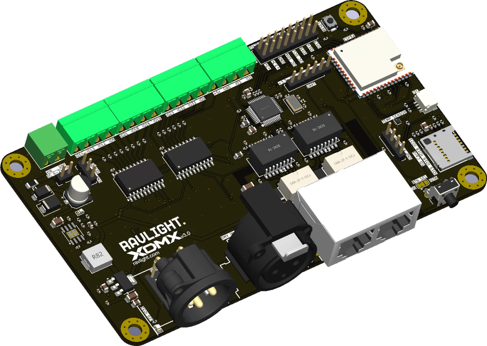
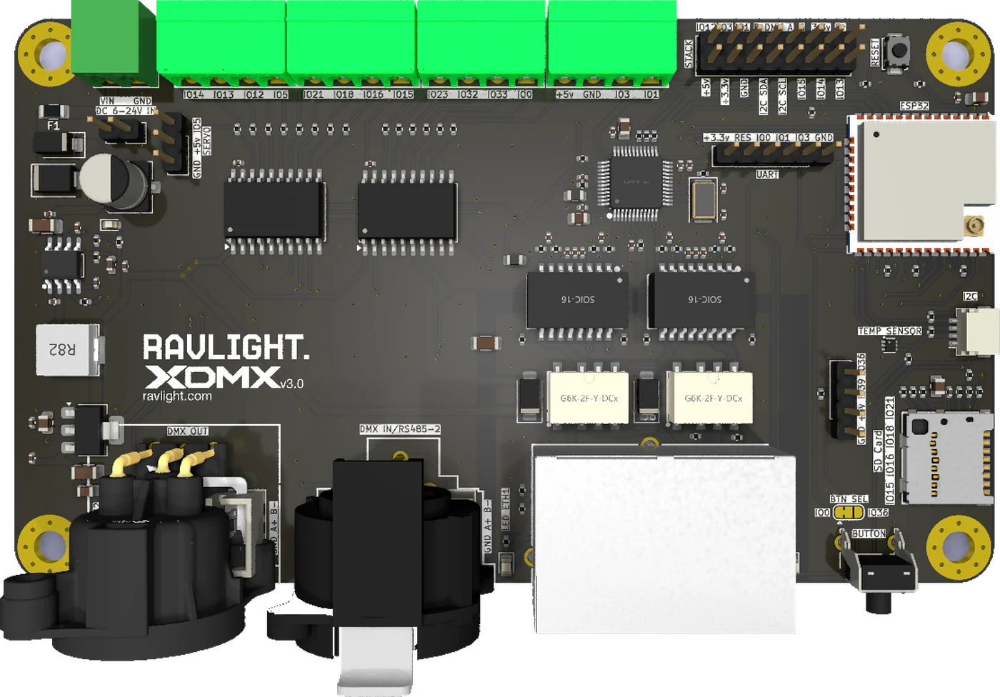

One board for the whole fixture.
One four-layer board with everything on it: two Ethernet ports that keep the run alive when a fixture loses power, two isolated DMX ports, a wall of buffered 5 V outputs, a card slot and a header for whatever comes next. Same firmware, same core — a new board file.

XDMX v3 is a single four-layer board: the power stage, the network section, both DMX ports, the protection and the output buffering laid out together and assembled by machine on both sides. One set of tolerances instead of three, a low enough stack to disappear into a fixture body, and every signal routed on purpose rather than jumped between modules.
That integration is what pays for the rest of this page — a second network port, so fixtures chain to each other instead of back to a switch, and a bypass that bridges those two ports when the board has no power, so one dark fixture doesn't take the rest of the run with it.
The rest of the decisions follow from where these boards end up: on a truss, in a rack, inside something that has to come down at the end of the night. Connectors grouped on one edge so they can face a panel. Pluggable blocks, so a fixture unplugs without being unwired. Six to twenty-four volts in, fused and protected, because an installation rarely offers a clean supply.
The processor is the one RavLight has always run on — the classic ESP32, the only one in the family with a hardware Ethernet controller. So v3 is new hardware running firmware that already exists: a board file, not a rewrite.
What each part of the board is for. Pick any marker.

A classic ESP32 — the only one in the family with a hardware Ethernet controller, which is why RavLight is built on it and why v3 keeps it. Wired network first, WiFi and its own access point as fallback, and an external antenna connector so the radio still works from inside a metal fixture body.
Two ports and a switch inside turn a star into a run — and a bypass makes sure a run survives a fixture that goes dark.
A switch sits between the two jacks and the processor: one jack is the inlet, the other passes through to the next fixture, and the processor hangs off the same switch. The fixture is a node on the run, not a leaf on a star, and it still takes exactly one address on the network.
For a truss of ten bars that is one cable up and nine short jumpers, instead of ten drops back to a switch that has to live somewhere.
Daisy-chaining anything has one classic failure: the chain is only as good as its weakest node. v3 answers that in hardware. At rest, two relays hold the two jacks wired straight to each other. Power the board and they open, so the switch handles traffic normally.
Kill the power — blown fuse, pulled cable, dead supply — and they fall closed again. The fixture goes dark; the run behind it does not.
Both DMX ports are optically isolated, so nothing on a DMX line finds its way to the processor. A bridge on the board decides what the input is for.
Input and output share one line: the fixture reads it and passes it on, exactly like every other fixture on the chain. The factory default — nothing to set.
The input moves to the second port on its own line. The board becomes a two-port node: one universe in, a different one out — wire to wire, or network to wire.
Fed from the network instead, one board becomes a two-universe Art-Net or sACN gateway — the job the Axon node already does, without a second box in the rack.
The two panel connectors are optional. Both ports are also brought out on internal headers, so a fixture that puts its own connectors on the enclosure — or has no XLR at all — takes the board without them and wires the line straight to the loom.
The Ethernet jacks sit on the board for a rack build, and a short internal lead takes a port out to a locking connector on the panel when the fixture needs one. End-of-line termination for DMX is set on the board, not with a plug.
Eight buffered outputs in the standard build — and up to fourteen if you trade away functions you are not using on that job. Addressable strips, PWM dimmers or relays, all leaving the board at a clean 5 V.
Every data line is buffered up from 3.3 V before it leaves the board, with real drive behind it. That is the difference between a strip that works at three metres and one that works at the far end of a truss.
Pluggable blocks for install work — wire them on the bench, unplug the fixture without unwiring it — each doubled with an internal header footprint for loom-built fixtures. The pin name is printed next to every pole.
For the scene manager: record a look from any source, leave the card in, and the fixture runs the show on its own with nothing else on the network.
An expansion header carrying the serial buses, spare signals and both supply rails, ready for a board stacked on top. The motor module for the Orion winch is the first thing meant to sit there.
On-board temperature reported to the web UI and Home Assistant, a plug-in port for any other sensor, two analogue inputs and a panel-button header — a fixture in a sealed box on a roof is a thermal problem worth watching.
The fixture layer is firmware. These are the ones that exist today — with two DMX ports, fourteen possible outputs, an expansion header and a card slot, they are nowhere near the limit.
A pixel strip with independent white accents, nine DMX personalities, shutter and dimming curves — the fixture RavLight was built around, now with a second network port so a row of bars chains bar to bar, and data that survives the run to the far end of the truss.
Outputs with their own universe mapping, pixel count and colour order, fed from sACN or Art-Net over wired Ethernet. For the holiday display that outgrew one controller and the installation that cannot rely on WiFi.
Two universes of wired DMX out of a network drop, with the chain passing through to the next node and the bypass behind it. The unglamorous box that makes the rest of the rig work — and the one that must never be the reason a run goes quiet.
The expansion header carries everything a motor driver needs. The plan is a daughter board with the stepper stage on it, so the controller that runs the lights and the one that runs the lift stop being two devices in the rig.
A DMX merger. A relay box on a truss. A sensor node that reports back over the same network the lights are on. Nothing about the board is specific to lighting past the two DMX ports — the fixture layer is where a new product gets written, and that part is open.
Pre-production. Anything here can still move before the first run comes back.
| Processor | ESP32, dual core, with hardware Ethernet, WiFi, Bluetooth and an external antenna connector |
| Ethernet | Two 10/100 ports through an on-board switch — one address per fixture, daisy chain without external hardware; link indicator per port |
| Bypass | The two ports are bridged whenever the board is unpowered, so the chain survives a dead fixture |
| Wired DMX | Two optically isolated ports; XLR connectors optional, both ports also on internal headers; input routed to either port by solder bridge; selectable end-of-line termination |
| Network protocols | Art-Net and sACN / E1.31 received natively, up to 32 universes, discovery reply, mDNS announcement |
| Outputs | Eight buffered 5 V lines in the standard build, up to fourteen when unused functions are traded away; pluggable blocks doubled with internal header footprints, plus a servo header |
| Storage | microSD, with card detect |
| Expansion | Stack header with serial buses, spare signals and both supply rails · plug-in sensor port · two analogue inputs · panel-button header |
| Sensing | On-board temperature, reported to the web UI and Home Assistant |
| Power | 6–24 V DC on a pluggable block; fuse, reverse-polarity and surge protection; 5 V and 3.3 V generated on board |
| Board | 130 × 75 mm, four layers, four M3 mounting holes, assembly both sides |
| Firmware | RavLight core, unchanged — Veyron, Elyon and Axon fixtures, web UI, OTA, DMX recorder, device discovery |
Generated from the layout as it stands today. Every part is in its real place; only the colours are the renderer's idea.
The first run is small, and what goes on the second one depends on what people say they need. Tell me what you would build with it — or what you would change about this board before it gets made.
The quickest way to ask something, argue with a design decision, or watch the bring-up go wrong in real time.
Pin assignments, connector choices, what you would have done differently. Public, so the next person reads it too.
v3 is not ready to order, but what it will run is. Flash it onto a board you already own — the web UI is the one you will know.